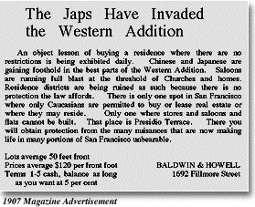
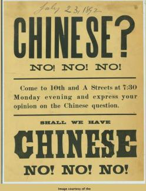
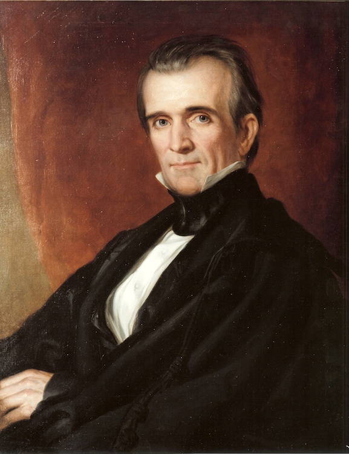
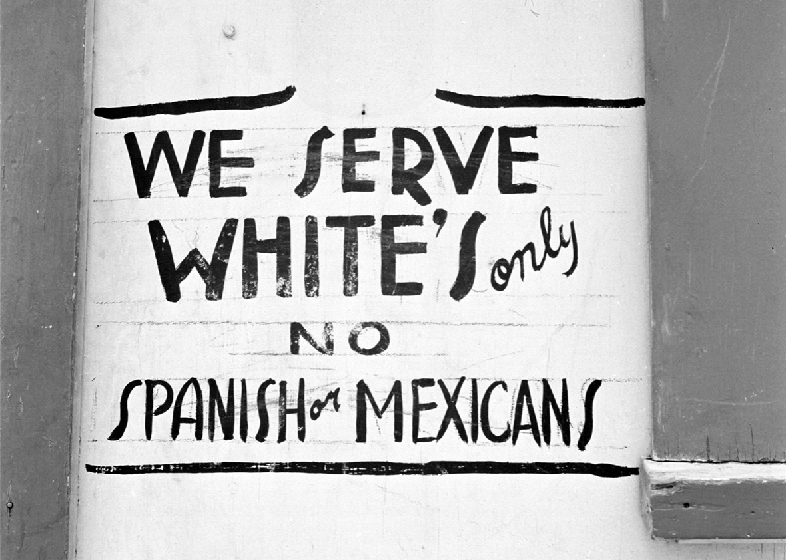
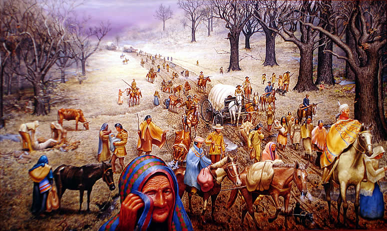

Race, as it is known today, is a recent creation that arose in the modern society. Before the 19th century, the term race was used to describe descendants of common ancestors. People spoke of the Christian race, European race, or French race, common to the modern term ethnicity. When white Europeans scourged the Americas-both North and South- in search for "new lands" and resources, they colonized the native people there, and justified that action in terms of their superiority of their race. When white American settlers eventually went to Africa to systematically enslave millions of people, racial coloration became an even more cultural justification.
Africans were enslaved and brought to the United States in significant numbers at the start of the 18th century. The Spanish, Portuguese and Dutch had established a lucrative slave trade in South America, Central America and the Caribbean nearly two centuries earlier. Before the slave trade ended in the mid-19th century, perhaps 12 to15 million Africans were captured and transported into slavery throughout the Americas. When the Civil War ended in 1865, about 4 million enslaved African Americans lived in the United States, the descendants of the half-million Africans who had been forcibly brought to North America. The enslavement process was simple:
White people had no qualms about treating African-Americans poorly, because they believed the skin color created such a stark difference between themselves, white cultured people, and black people, dark-skinned savages. It was a way to keep their white fragility intact, and it's often seen even in today's society.
Asians came to America in relatively large numbers in the mid 1800s. First to come were the Chinese and a little later, Japanese, Filipinos, Koreans and East Indians. Most came to work in mines and lumber mills of the Pacific Northwest, pick fruits and vegetables in the fields of California, and to work on the transcontinental railroad in the Rocky Mountains. Though most Asians ended up in the western United States, a small proportion of the earliest Asian immigrants went to east coast cities such as New York and Philadelphia and some even ended up in New Orleans and other parts of the Mississippi Delta. Asians did not come in chains as Africans had. Asians came voluntarily, lured by the promise of jobs and a regular paycheck.
The railroad and mining companies sent recruiting agents to various parts of Asia. For example, the agents went to China and talked about a “Gold Mountain” in San Francisco, pieces of which could be taken home. The agents were speaking figuratively but the idea captured the imagination of poor Chinese peasants and many willingly signed contracts to leave their homes for California. The migrants often ended up in conditions of indentured servitude. Asian workers accepted very low wages, which sparked conflict with labor unions representing white workers. And the use of Asian languages frequently aroused suspicion among whites. As a result, there was rampant discrimination against Asians.


Their cultural identity and even their bodies was considered illegal. In 1905, labor unions, with the support of key political leaders and newspaper publishers, formed the Asiatic Exclusion League dedicated to keeping Asian immigrants out of California. Earlier, in 1882, the U.S. Congress had passed the Chinese Exclusion Act, outlawing Chinese migration into the United States.
Arab Americans also started to come to the United States in relatively large number in the mid- and late-1800s. The earliest Arab immigrants were mainly Eastern Orthodox Christians. By 1924, there were perhaps 100,000 Arabs in America. Most of the Arabs were from what was called “Greater Syria” – comprising modern-day Lebanon, Syria, Jordan, Iraq and Israel. A vast majority of these early Arab immigrants were Lebanese. There was a smaller number of Syrians and Palestinians. Members of these groups referred to themselves by these sociocultural designations, not at Arab Americans.
It was only after WWII that these immigrants called themselves Arab Americans. Partly this was because pan-Arab nationalism intensified in reaction to the establishment of the nation of Israel after WWII, a process that displaced many Palestinian Arabs.
Why did Arabs come to America? Two main reasons were contact with the west during the late 19th and early 20th centuries, especially with American archaeologists, tourists, missionaries, traders, educators and writers; and labor recruiters who went to the region to find people to work on the railroads, farms, and factories (much like the situation with Asians). Some of the early Arab immigrants became shop owners, real estate agents, clerks, etc. Sometimes they pooled money and bought property. And many Arabs in America, despite close ties to their home countries and cultures, decided to become U.S. citizens. Despite becoming citizens, however, many Arabs still faced discrimination and prejudice and were the subject of misrepresentation in news and popular culture. Even when Arabs enlisted for the U.S. military, they faced prejudice. Eventually, many Arabs were able to assimilate, as European immigrants had done, by adopting American lifestyles and cultural patterns.
However, 9-11 changed the way society viewed Arab Americans. After 9-11, anyone who was “marked” by name, religion or nationality as potentially linked to Islam or the Middle East came under scrutiny, the victim of prejudice and hate crimes. After 9-11 Arab and Muslim Americans immediately were viewed as a threat to national security, just as free blacks were viewed as a threat to law and order and Asians were viewed as a threat to white labor in earlier times. Arab and Muslim Americans were practically invisible on 9-10 but became public enemy number one by the end of the day on 9-11. In the first six months after 9-11, hate crimes against people presumed to be Arab or Muslim went up 1,700%.
Mexicans, as well as other Latino countries, became part of multicultural America not through enslavement or migration, but through invasion and annexation. The United States and the Republic of Mexico went to war in 1846. The United States coveted Mexico’s northern territories (which encompassed present-day California, Arizona, New Mexico and Texas). In 1835, American settlers had moved into Texas and a year later declared their own Republic of Texas. In 1844, James K. Polk was elected president. He had campaigned on expanding U.S. territory and immediately upon taking office he
Annexation went fairly quickly and Texas was incorporated into the union in December 1845. In January 1846, an angry Polk then ordered U.S. troops to the northern bank of the Rio Grande, which was the US-Mexico border according to Americans. However, Mexico believed the US-Mexico border was 100 miles to the north. Thus, Mexico held that the United States had invaded Mexican territory and sent its own troops to the Rio Grande to confront the U.S. troops. Fighting broke out and Polk asked Congress to declare war, which it did. The war’s end came in February 1848 with the Treaty of Guadalupe-Hidalgo, which forced Mexico to cede 55% of its national territory to the United States – about 500,000 square miles including modern day California, Nevada, Utah, most of Arizona, and parts of New Mexico, and Colorado. Mexico received $8,325,000. 
Practically overnight, 80,000 Mexicans who were living in Mexico one day, were living in a foreign country. The treaty ending the war guaranteed Mexicans living in these areas the right to become U.S. citizens and most chose to do so. The U.S. government promised to protect the property rights and civil rights of Mexicans, but that happened only sporadically. More frequently, Mexican-Americans faced discrimination, violence and bullying.
To survive in the new circumstances, Mexican-Americans in the new territory had to adapt to new ways of life and learn a new language. They had to learn English in order to communicate their needs. There were many challenges and problems with assimilation – the notion of minorities adapting to the cultural norms and expectations of a majority population. The process of assimilation provided cultural gain (e.g., English language fluency) but also resulted in cultural loss (e.g., family intimacy).
Native Americans were not captured in another land and transported to America. Nor did agents promising unique opportunities lure them to America. But like the Mexicans, they already lived on land desired by the U.S. government. When Christopher Columbus "discovered" America, it was already inhabited by Natives. Thus began the systematic mass genocide of Native Americans by the white settlers. In the 19th century, the U.S. government, as a matter of policy, aggressively pushed Natives off their land and ultimately into reservations. The U.S. government often ignored violence by whites against natives but pointed to violence by Natives against whites as an excuse for further repression. The Indian Removal Act of 1830, signed into law by President Andrew Jackson, enabled the military to move five major tribes – the Choctaw, Cherokee, Seminole, Creek and Chickasaw – from their lands east of the Mississippi River to lands to the west. The massive westward migration of Indians was referred to as “the trail of tears.” The U.S. policy paid no heed to the land-culture link embraced by many Indian tribes.

As Europeans encountered the people of other lands they collected information about what they were seeing and experiencing. European travelers wrote letters, merchants wrote diaries, sea captains kept naval logs, diplomats kept records, and so on. Many of these accounts were sensationalistic, exaggerated or downright fabrications. In European eyes, the people and cultures encountered in foreign lands were stranger than anything they had seen before.
By the middle of the 18th century, there was a lot of information and misinformation about lands to the south and east of Europe. Carolus Linneas, a Swedish botanist and zoologist, collected these accounts and began to organize them according to the regular patterns in the way Europeans described non-Europeans. Thus, he created a taxonomy of people, a set of categories into which people were classified. Though his taxonomy of people was quite complex, it boiled down to identifying characteristics of Europeans and various non-Europeans.
Linneas went about the task of organizing the traits of various people just as he would have done with plants or animals – objectively and dispassionately. In other words, Linneas was not consciously attaching any judgments to the process of organizing the information about non-European people. He was not explicitly suggesting, for example, that since Europeans were ingenious and clever they were inherently superior to non-Europeans who did not, according to his tables of data, possess those qualities.
However, this non-judgmental way of understanding the taxonomy changed toward the end of the 18th century as the global slave trade was peaking. At the height of the slave trade, Europeans seemed conflicted: Slavery was lucrative but it seemed, to some, immoral to enslave fellow humans. Slavery needed to be somehow justified on moral grounds so that European nations could continue enriching themselves from the slave trade.
Thus, Europeans began attaching value judgments to the categories of characteristics listed in the previously value-free taxonomies. The basis for these value judgments was some combination of physical features and mental traits, which eventually came to be understood as causally linked. In other words, Europeans began to see skin color as a symbol for negative qualities related to mental capacity and other traits.
Visually, racial hierarchy was depicted in the following illustration from a geography textbook from the late 1800s. It shows the Anglo-Saxon white man at the top of the page in the center, flanked by an “East Indian Raja” and an “Arab Sheik.” The Raja and Sheik – as representatives of people who might be considered “white” in some interpretations of science and law – were not always viewed as being at the same level as the Anglo-Saxon. However, it is clear in this textbook depiction that the top third or so is devoted to Europeans, the middle third roughly to Asians and Native Americans and the bottom to Africans and African Americans.